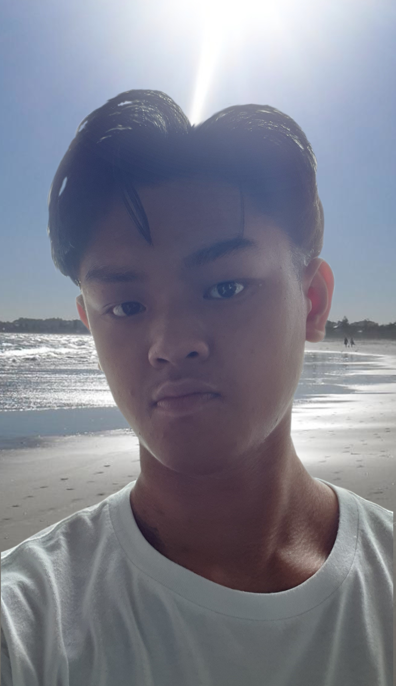
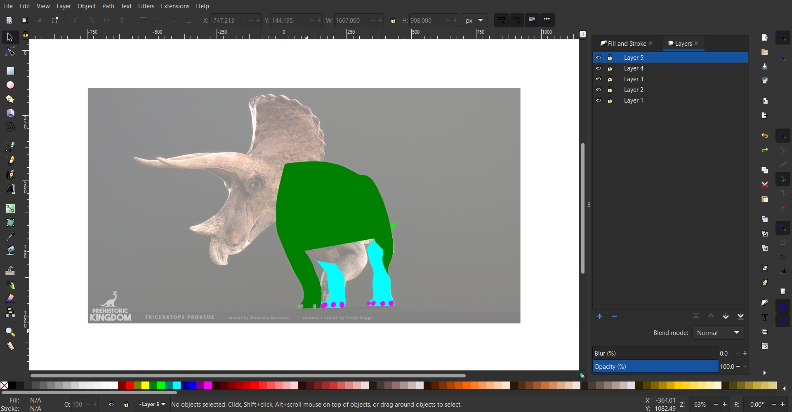

Computer Graphics
Computer graphics consists of two catergories, raster and vector.
Computer graphics softwares are used to digitally manipulate visual
contents like images.
What is Raster Graphics
Raster graphics is mainly compiled of pixels which are displayed on
screen and it is used for photographs and images which all consists of
pixels. The file formats include, .bmp, .jpg and .png.
Learning and Applying Raster Graphics
For the raster graphic software, I will be using GIMP which is a free
to download software to do the task of editing my selfie.
Step 1: Taking a selfie.

Note: Knowing that I will be editing my selfie onto a beach background,
I would take my photo with natural sunlight.
Step 2: Adding my selfie into GIMP.
Step 3: Removing the background of my selfie

Step 4: Adding a background layer of the beach
After adding the image of the beach into GIMP, I resized it and adjust
the position.
Step 5: Adding sunlight effects
With the sunlight effect being added to the image, it helps to blend my
selfie better with the background.
Final result

After learning how to use GIMP, I will definitely be using it when I
need to do image editing and plus the software is free which is more of
an incentive to keep using it.
What is Vector Graphics
Vector, unlike raster graphics which is made up of pixels, is made up of
lines, and as the image is zoomed in, it does not lose quality. The file
formats include, .dxf, .svg and .STEP.
Learning and Applying Vector Graphics
For vector graphics, the software I will be using will be InkScape which
is free software and has numerous video tutorials online to learn from.
Step 1: Selecting a image of an animal online
Step 2: Inserting the image into InkScape
Step 3: Turning down the opacity of the reference image
Turning dow the opacity of the reference image to 50%, it will allow me
to trace out the Triceratops much easier in the next step.
Step 4: Tracing the outlines of the features of the Triceratops
Firstly, I traced out the tail since it is the most futhest part of the
Triceratops. As we move on, I will be tracing parts that are gradually
closer.


Step 5: Recolouring and final touches
After recolouring it with a nice red body and yellow underbelly, I
decided to create a circular light blue background to contrast with the
Triceratops and help to make it stand out.
Final result

After learning how to use InkScape, I find it really useful whenever I
need to create a cool art design or a logo, and since the software is
free, I will be sure to keep using it.